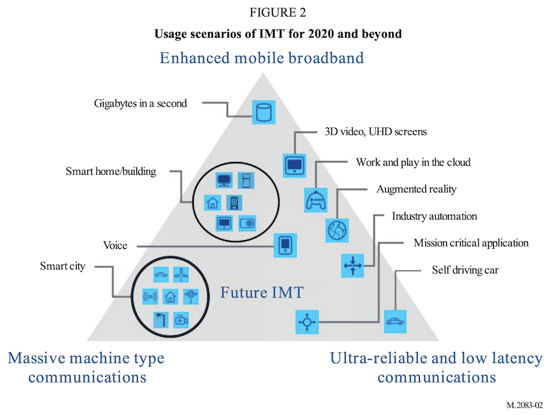

移动互联网安全
黄玮
第一章 无线网络安全基础
提纲
- 移动互联网基础
- 无线网络基础
移动互联网基础

无线网络基础
- 无线网络是什么？（协议基础）
- 无线网络有什么？（设备基础）
- 无线网络的路由？（系统基础）
无线网络是什么？
Wi-Fi？WLAN？802.11？蓝牙？NFC？
Wi-Fi
Wi-Fi Alliance® is the worldwide network of companies that brings you Wi-Fi®
Our work includes the development of innovative technologies, requirements, and test programs that help ensure Wi-Fi provides users the interoperability, security, and reliability they have come to expect.
WLAN
- Wireless Local Area Networks, 无线局域网
- 使用
射频（Radio Frequency, RF）技术建立的不依赖可见物理传输介质的无线通信局域网络
无线网络通信协议家谱
| ⽆线⽹络类别 | IEEE | ITU |
|---|---|---|
| 蜂窝通信（2G, 2.5G） 最后几公⾥, Kbps |
GSM, CDMA,GPRS,EDGE | |
| 3G(WMAN) 最后几公里，1~xx Mbps |
WiMax(802.16e) | WCDMA(欧洲) CDMA2000(美国) TD-SCDMA(中国) |
| 4G(WMAN) 最后几公里，1~100 Mbps |
WiMax(802.16m) | LTE(FDD/TDD) |
| 5G 最后1公里，xxxMbps~xxGbps |
IMT-2020 | |
| WPAN 10米,Kbps~Mbps |
蓝牙(802.15.1)/UWB(802.15.4a)/ZigBee(802.15.4) | |
| WLAN 100米,10Mbps~xxGbps |
Wi-Fi(802.11) |
5G 应用场景

5G 技术关键指标

IEEE 802.11
802.11 技术架构

802.11 技术组件
- STA
- AP
- Portal
- BSS / IBSS / PBSS
- SS
- ESS
- DS
- 802.x LAN
Wireless station (STA)
- 可寻址的设备（非固定位置）
- 固定地址、可移植地址、动态地址
- ⽆线客户端
- ⽆线路由器
- ⽆线接⼊点
- 固定地址、可移植地址、动态地址
无线介质带来的局域网组网新挑战
- 没有可靠的物理层连接质量保障
- 拓扑 动态性 和 位置移动性 更强
- 普遍的电池供电：电源管理和低功耗需求
- 共享的物理层传输介质：嗅探和中间人劫持风险
和 IEEE 802® 协议 家族的互联互通需求
- logical link control (LLC)：抽象层，解决物理层连接可靠性质量管理
- robust security network association (RSNA)：抽象层，解决共享物理传输介质带来的安全性挑战
IEEE 802.11 QoS：解决 动态性 和 位置移动性 需求
AP
- Access Point
- STA的⼀种
- 对已关联（
associated）的STA基于⽆线介质（WM,Wireless Medium）提供接⼊分布式服务
BSS
- Basic Service Set
- STA 加⼊的集合
- STA 之间是否可以相互可见（通信）取决于接⼊点设备的配置
- BSA: basic service area
- BSS 的覆盖区域
IBSS
- infrastructure BSS
BSS默认就是指的的基础设施 BSS，IBSS特指Independent BSS- ⾄少包含 1 个接⼊点（
Access Point, AP） Portal（门户）是可选项- ⽆线服务的逻辑接⼊点，例如学校的⽆线认证页面
- Independent BSS
- 最基本的 IEEE 802.11 局域网
- Ad-hoc
- 最少包含 2 个
STA - 不支持接⼊分布式系统
PBSS
- personal BSS
- 类似 IBSS ，STA 之间直接通信
- 不同于 IBSS
- STA 扮演
PBSS 控制点（PBSS control point, PCP） - 仅限 IEEE 802.11ad 协议中定义的
DMG(Directional multi-gigabit) 客户端- 使用
60GHz频谱资源，也可使用 2.4G/5G 频谱 - 有效通信距离小于5米
- 使用
- STA 扮演
MBSS
- Mesh BSS, IEEE 802.11s
- 一个典型的 MBSS 是由
AP同时扮演BSS中的数据转发者和另一个BSS中的客户端，从而实现跨 BSS 的通信、多物理 AP 组成一个ESS - 相对固定的分布式基础设施模式无线网络
SS
- Station Service（站点服务）
- 在⼀个指定BSS内提供
数据链路层通信服务- 支持在 BSS 内不同 STA 之间传输
MSDU的服务集合- MSDU: medium access control (MAC) Service Data Units
- 支持在 BSS 内不同 STA 之间传输
ESS
- Extended Service Set（扩展服务集合）
- 物理上独立的
BSS组成的⼀个逻辑上的独立服务集合- 使用相同的ESSID
- ⽆线热点扩展
- CUC-WiFi、CUC-Guest、CMCC、ChinaNet …
- 支持漫游
DS / DSS
- Distribution System （分布式系统）
- 增加
BSS的覆盖范围（面积） - 又被称为
WDS（Wireless DS）
- 增加
- Distribution System Service (DSS)
802.x LAN
- 802.3: wired local area network
- 以太网使用双绞线作为传输媒介
- 在没有中继的情况下，最远可以覆盖 200 米的范围
- 支持数据传输速率范围：100Mbps ~ 10Gbps
- 802.11: wireless local area network
- 802.11a/b/g/n/ac/ad/ax
- 802.11i
IEEE 802 家族主要协议对应 OSI 模型归属关系

IEEE 802.11 家族协议历史

IEEE 802.11g 第1-14信道的频谱屏蔽范围定义

Wi-Fi 世代与 IEEE 802.11 家族
| Wi-Fi 世代 | 发布时间 | IEEE 版本 | 频谱 | 理论最大传输速率 |
|---|---|---|---|---|
| Wi-Fi 1 (非官方） | 1999 | 802.11b | 2.4GHz | 11Mbps |
| Wi-Fi 2 (非官方） | 1999 | 802.11a | 5GHz | 54Mbps |
| Wi-Fi 3 (非官方） | 2003 | 802.11g | 2.4GHz | 54Mbps |
| Wi-Fi 4 | 2009 | 802.11n | 2.4GHz && 5GHz（可选） | 600Mbps |
| Wi-Fi 5 | 2014 | 802.11ac | 5GHz | ≈7Gbps |
| Wi-Fi 6 | 2021 | 802.11ax | 2.4GHz && 5GHz | ≈10Gbps |
| WiGig | 2012 | 802.11ad | 60GHz | ≈7Gbps |
BSSID
BSS模式下是AP的MAC 地址- 对于
IBSS来说是随机的MAC 地址
ESSID
- ⼀般简称为
SSID，⽆线⽹络的接⼊唯⼀标识- 仅作为⼀种声明
- 可任意声明（伪造）
- STA 与 AP 关联（
Associate）使用的标识 - 区分⼤小写、2-32 字节
- 单个 AP 可以支持多个 ESSID
- 取决于设备与系统的支持情况
- 常见的：客⼈⽹络
ESSID
- 取消 SSID ⼴播 / 隐藏 SSID
- 客户端不能“主动发现”
- 并不能增强⽆线⽹络安全性
- 且听第三章分解
- 构建 ESS 时，所有的 BSS 必须使用相同的 ESSID
为什么需要 BSSID
- 增强识别 BSS 的准确性
- 同名 ESSID 时，通过 BSSID 区分不同的 BSS
802.11 工作模式
- 基础设施
- BSS / ESS / MBSS
- Ad-Hoc
- IBSS / PBSS
- 监听（monitor）模式
- 第⼆章讲解
802.11 关联过程（无加密，开放认证）

可选步骤，AP 如果开启了 SSID ⼴播，则 STA 可以通过
beacon frame得到认证相关信息
Wireshark 抓包分析实例

无线网络连接状态实例

如图所示的信号来自于位置相近的 2 台无线路由器，可见 2.4GHz 无线信号穿墙效果好于 5GHz 无线信号
STA 加⼊（关联）AP 的策略
- 历史关联记录优先
- 先发现，先关联
- 信号强度⾼者优先
RSSI：received signal strength indicator- 接收信号的强度指示，负值
- RSS = 10*lgP ，P 是接收到的信号功率，⼀般以 1mW 作为分母
- dBm：功率绝对值，0 表示最强，越近 0 功率值越大
- 对于 RSSI 来说，高 dBm 意味着更好的接收效果
- 对于噪声值来说，高 dBm 意味着更强的干扰
- dB：功率相对值
STA 加⼊（关联）AP 的策略
- （常见可选）应用层连接质量检查
- 检测当前无线网络是否可以访问预置受信任网络服务：预防网络劫持和投毒
抓包结果中的信号强度值实例
抓包结果中的信号强度值实例

无线网络设备基础
无线网络有什么？
- AP？路由器？热点？
- 上⽹卡？电⼒猫？3G？4G？5G?
- ⼿机？平板？笔记本？台式机？空调？插座？WiFi-SD 卡？
常见术语与概念
- （⽹卡）芯片
- 厂商
- 驱动程序
- ROM / Flash
- RAM / 内存
- 天线
支持本课程实验的常见 USB 无线网卡
- 已验证支持网卡清单
- 支持无线数据帧
自定义接收： 嗅探 （monitor） - 支持无线数据帧
自定义发送： 注入 （frame injection）- 网卡进入
monitor模式之后使用aireplay-ng --test wlan0测试
- 网卡进入
- 支持工作在 AP 模式

常用 USB 无线网卡信息调试指令（Kali）
# 查看物理网卡的硬件和软件特性支持情况
iw phy
iw list
# 查看 USB 端口上已连接设备基本信息
lsusb
# 查看USB设备所使用的驱动信息及其他详细信息（即使系统没有支持当前无线网卡的驱动程序，但通过该命令可以看到所有连接成功的USB设备）
lsusb -v
# 以树形结构打印输出USB设备基本信息及其驱动加载情况
lsusb -t
# 查看PCI接口设备所使用驱动的详细信息
lspci -k
# 查看硬件驱动和配置详细信息
# 需要手工安装： apt-get install lshw
lshw
# 简要模式打印输出设备中的所有硬件设备及其对应驱动信息
lshw -short
# 上一条命令输出结果里的class字段标识的设备类型，在此处可以作为筛选条件过滤输出结果
lshw -class bus
# 查看所有无线网卡的接口标识信息
iw dev
# 查看最近加载的（硬件）驱动日志信息
dmesg常见网卡芯片厂商名单

以 Atheros AR9271 为例
- 查询 支持硬件属性
- 查询 Linux 不同发行版的 驱动支持 情况
- 查询 哪些设备使用该网卡控制芯片
天线（Antenna）
- ⽆源器件
- 通过控制信号发射的角度，来获得信号“增益”
- 信号的总能量由 AP 决定
- 天线决定信号如何传播出去
- 全向（Omni）天线：覆盖角度大，能量聚集度低，覆盖距离短。适用于室内环境
- 定向（directional）天线：覆盖角度小，能量聚集度高，覆盖距离长。适用于户外环境
无线网络系统基础
知名的路由器操作系统
OpenWrt
- 基于 GNU/Linux 的嵌⼊式设备（主要是⽆线路由器）操作系统，采用 GNU GPLv2 授权协议
- 官⽅硬件兼容性表格 列举了超过 1600 种市面上的⽆线路由器（数据统计截止：2020-12）
- 在 VirtualBox 中体验 OpenWrt
- 一段分分合合的小插曲
- 2016 年 OpenWrt 中的一部分开发者因「开发理念不同」基于主干代码创建了一个新分支项目 LEDE ，主打「稳定性」、「规律的版本发布周期」和「透明决策机制」
- 2018 年 1 月，LEDE 开发小组成员和 OpenWrt 开发小组成员达成和解，LEDE 项目重新回归 OpenWrt 社区，终止 LEDE 项目
DD-WRT
- 用于⽆线路由器的的第三⽅固件，采用 GPL 协议，支持基于 Broadcom 或 Atheros 芯片参考设计的许多 IEEE 802.11a/b/g/n ⽆线路由器
- 固件是由 BrainSlayer 来维护的，放在 dd-wrt.com
- DD-WRT 的第⼀个版本基于Sveasoft Inc 公司的 Alchemy 开发出来的, ⽽Alchemy 又是基于 GPL 的 Linksys固件及许多其它开源程序
- 由于后来⼈们需要向 Sveasoft 支付 20 美元才能下载 Alchemy 固件，直接的后果就是发展出了 DD-WRT
DD-WRT
- DD-WRT 的新版本 (v24) 是⼀个全新的项目
- DD-WRT 提供了在 OEM 固件，甚⾄ Sveasoft 收费的固件中没有的⾼级特性
- 此外它去除了 Sveasoft 固件的产品激活和跟踪功能。
- 官⽅支持设备列表
tomato
- 以 HyperWRT 为基础的⽆线路由器固件，支持的路由器型号较少，如下：
- Linksys WRT54GL v1.x, WRT54G v1-v4, WRT54GS v1-v4, WRTSL54GS (no USB support)
- Buffalo WHR-G54S, WHR-HP-G54, WZR-G54, WBR2-G54, WBR-G54, WZR-HP-G54, WZR-RS-G54, WZR-RS-G54HP, WVR-G54-NF, WHR2-A54-G54, WHR3-AG54
- Asus WL520GU (no USB support), WL500G Premium (no USB support), WL500GE
- Sparklan WX6615GT, Fuji RT390W, Microsoft MN-700
RouterOS
- MikroTik 公司基于 Linux 内核开发的路由器操作系统，可以安装在其私有硬件产品
RouterBOARD系列或标准x86 计算机 RouterBOARD系列设备在出厂时即预置了RouterOS产品授权秘钥- PC 设备安装 RouterOS 需要额外获取授权秘钥，授权等级见 官⽅ Wiki
本章小结
- 无线网络和 IEEE 802.11 协议家族之间的关系
- 基于 IEEE 802.11 构建的无线网络的基本组件
- 无线网络设备基础（无线网卡和无线接入设备）：如何选购符合本课程实验要求的无线网卡
- 课后作业 在虚拟机中安装 OpenWrt ，搭建「无线软路由」，为第二章学习准备好「无线 AP」实验环境